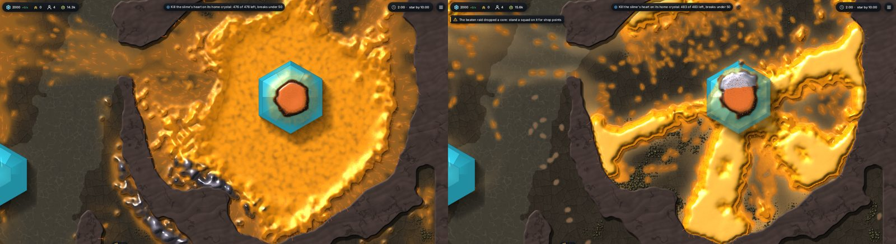
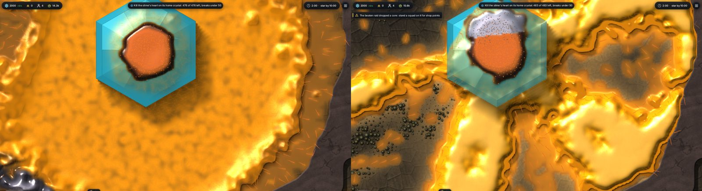
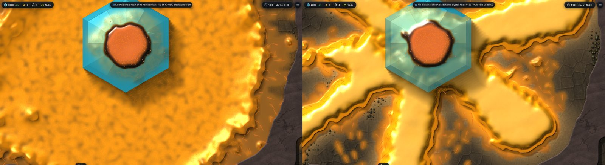
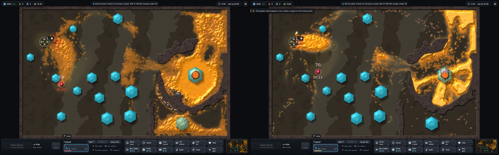

<title>Sprawler Threads In Game</title>
<meta name="claude:viewport-fit-sides" content="cover">
<link rel="stylesheet" href="https://fonts.googleapis.com/css2?family=Space+Grotesk:wght@500;700&family=Inter:wght@400;600&family=JetBrains+Mono:wght@400&display=swap">
<style>
/* Layout: one reading column; each picture full width with its counts beside it in a small table. */
:root {
  --bg: #f6f3ec; --fg: #23211c; --muted: #6b665a; --line: #ddd6c6; --slime: #b86a00; --panel: #fffdf8;
  --display: "Space Grotesk", "Segoe UI", system-ui, sans-serif;
  --body: "Inter", "Segoe UI", system-ui, sans-serif;
  --mono: "JetBrains Mono", ui-monospace, monospace;
}
@media (prefers-color-scheme: dark) { :root:not([data-theme="light"]) { --bg: #17150f; --fg: #ece6d8; --muted: #a59d8b; --line: #3a352a; --slime: #f0a326; --panel: #1f1c15; color-scheme: dark } }
:root[data-theme="dark"] { --bg: #17150f; --fg: #ece6d8; --muted: #a59d8b; --line: #3a352a; --slime: #f0a326; --panel: #1f1c15; color-scheme: dark }
body { background: var(--bg); color: var(--fg); font: 15px/1.55 var(--body); }
main { max-width: 1320px; margin: 0 auto; padding-block: 28px 60px; padding-left: max(16px, env(safe-area-inset-left, 0px)); padding-right: max(16px, env(safe-area-inset-right, 0px)); display: grid; gap: 34px; }
h1, h2 { font-family: var(--display); text-wrap: balance; margin: 0; }
h1 { font-size: 2rem; }
h2 { font-size: 1.25rem; }
p { margin: 0; max-width: 68ch; }
.lede { display: grid; gap: 10px; }
.eyebrow { font: 12px var(--mono); letter-spacing: .06em; text-transform: uppercase; color: var(--slime); }
section { display: grid; gap: 12px; }
figure { margin: 0; display: grid; gap: 8px; }
figure img, figure video { width: 100%; max-width: 100%; height: auto; border-radius: 6px; background: #000; }
.pair-labels { display: grid; grid-template-columns: 1fr 1fr; font: 12px var(--mono); color: var(--muted); }
figcaption { color: var(--muted); font-size: 13px; max-width: 90ch; }
.tablewrap { overflow-x: auto; }
table { border-collapse: collapse; font-variant-numeric: tabular-nums; font-size: 13px; }
th, td { text-align: right; padding: 4px 12px; border-bottom: 1px solid var(--line); white-space: nowrap; }
th:first-child, td:first-child, th:nth-child(2), td:nth-child(2) { text-align: left; }
th { font-weight: 600; color: var(--muted); }
tr.on td { color: var(--slime); }
.rec { background: var(--panel); border: 1px solid var(--line); border-radius: 8px; padding: 16px 18px; display: grid; gap: 8px; }
code { font: 13px var(--mono); }
ul { margin: 0; padding-left: 20px; max-width: 80ch; }
</style>
<main>
  <div class="lede">
    <div class="eyebrow">Enemy lane · planet 2 · 2026-11-24</div>
    <h1>The Sprawler lives as threads</h1>
    <p>The Lab's threads (lanes and a shuttle) are now planet 2's own rule. Round each crystal, the packed disc opens into thick spokes with bare ground between them: walkers stream out along their trails and come back when hungry. Left is main before; right is the change that lands, at the size it lands at (0.45, was 0.6). Run seed 1, planet 2, an idle squad of 4, lavapipe.</p>
  </div>

  <section>
    <h2>In motion, zoom 8 (1:50 to 1:56)</h2>
    <div class="pair-labels"><span>before</span><span>threads, size 0.45</span></div>
    <figure><video src="threads-motion-z8.mp4" controls loop muted playsinline autoplay></video>
      <figcaption>Frames every 0.2 s, played at 10 a second (half speed). The walkers run along the spokes' ridges both ways.</figcaption></figure>
  </section>

  <section>
    <h2>A minute of it, zoom 6 (1:00 to 2:00)</h2>
    <div class="pair-labels"><span>before</span><span>threads, size 0.45</span></div>
    <figure><video src="threads-z6.mp4" controls loop muted playsinline></video>
      <figcaption>A frame every 2 s. The spokes form within the first minute and hold their shape while the squad fires into them.</figcaption></figure>
  </section>

  <section>
    <h2>Stills</h2>
    <div class="pair-labels"><span>before</span><span>threads, size 0.45</span></div>
    <figure><figcaption>Zoom 6, 2:00.</figcaption></figure>
    <figure><figcaption>Zoom 12, 2:00. Bare ground shows between the spokes: the veil is now drawn only where walkers stand (Look's gate).</figcaption></figure>
    <figure><figcaption>Zoom 12, 1:00.</figcaption></figure>
    <figure><figcaption>The whole map, 2:00.</figcaption></figure>
  </section>

  <section>
    <h2>Counts</h2>
    <div class="tablewrap"><table>
      <tr><th>Arm</th><th>Size</th><th>Landed</th><th>Walkers 1:00</th><th>Walkers 2:00</th><th>Alone or in twos</th><th>Killed by 2:00</th><th>Soldiers 2:00</th><th>Squad health</th></tr>
      <tr><td>before</td><td>0.6</td><td>13,845</td><td>12,788</td><td>14,317</td><td>26%</td><td>6,223</td><td>4</td><td>28</td></tr>
      <tr><td>threads</td><td>0.6</td><td>13,845</td><td>19,827</td><td>26,725</td><td>11%</td><td>5,352</td><td>3</td><td>18</td></tr>
      <tr class="on"><td>threads (lands)</td><td>0.45</td><td>10,384</td><td>15,493</td><td>15,593</td><td>14%</td><td>4,646</td><td>4</td><td>31</td></tr>
    </table></div>
    <p>Lanes let up to 3 more walkers share a cell, so the threaded body packs more walkers into the same ground. At 0.6 it filled its birth ceiling (27,691), while the packed body stayed near 14,000, held by the room it had. So planet 2's size is now 0.45: about as many walkers as before by 2:00, landing a quarter smaller. The spokes look the same at either size.</p>
  </section>

  <section class="rec">
    <h2>What changed</h2>
    <ul>
      <li>Planet 2's rule (<code>gpu::Settings::thread_lanes</code>, <code>thread_shuttle</code>, GPU only). It uses the Lab's numbers, with the trail kept at 0.92 and sensors at 6.</li>
      <li>Its size (<code>run::tier_size</code>) goes from 0.6 to 0.45.</li>
      <li>The thread veil is drawn only where walkers stand (<code>view.wgsl</code>, Look's gate).</li>
      <li>Lab prototype and its seeds 1 to 3: <code>Reports/lab-threads-2026-11-24/</code>.</li>
    </ul>
  </section>
</main>
